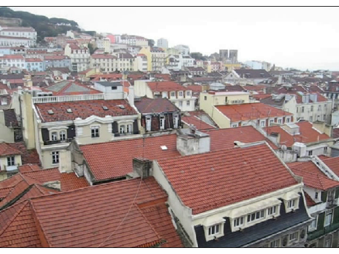

Simple VideoRecorder Example
In here you can see and example of how to use the VideoRecorder object.
Contents
Create a new VideoRecorder Object
First of all we have to define the video name and the format of this new video, in this example the video name is set to NewVideo and the format to mov.
vr = VideoRecorder('NewVideo', 'Format', 'mov');
Insert frames to the VideoRecorder Object
After we have created the VideoRecorder object, we are ready to insert frames to this object.
vp = VideoPlayer('./Resources/TestVideo.mp4'); for i = 1:10 vr.addFrame(vp.Frame); vp + 1; end clear vp;
Close the VideoRecorder Object
Finally we have to close the video sequence by releasing the VideoRecorder object.
clear vr;
See the Recorded Video
Finally with this script you can see the recorded video.
vp = VideoPlayer('NewVideo.mov'); while (true) plot(vp); drawnow; if (~vp.nextFrame) break; end end clear vp;